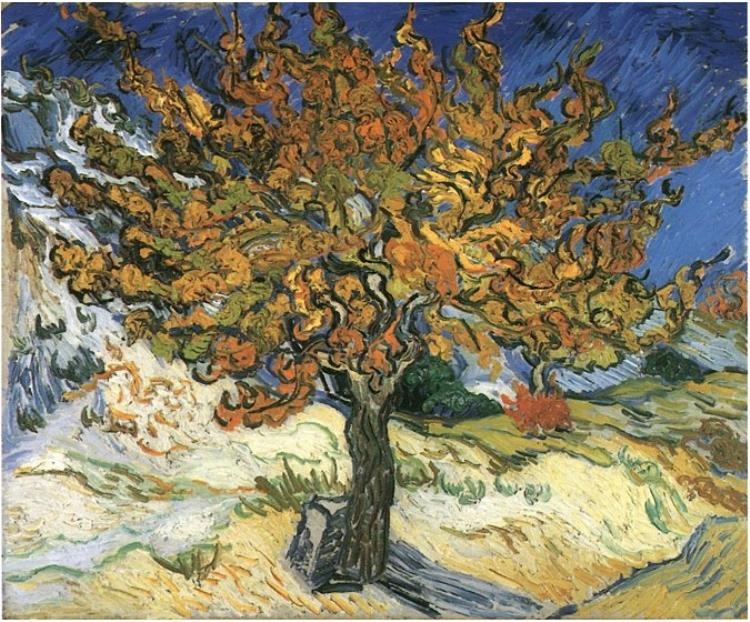
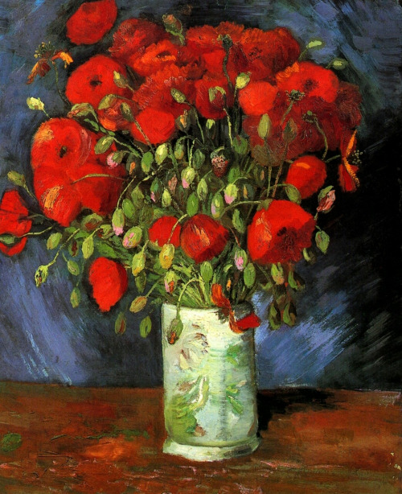

Almond blossom, Vincent Van Gogh, 1890, Van Gogh Museum (left); Starry night,
Vincent Van Gogh,
1889, MoMA (right); Self-portrait, Vincent Van Gogh, 1889, Musee D’Orsay (center).
Chronology of Vincent Van Gogh's life
1853 March 30 - Vincent Van Gogh is born in Groot-Zundert, Netherlands
1864 - 1866 Sent to boarding school in Zevenbergen
1869 July - Van Gogh is employed by the Hague gallery
1873 June - Van Gogh is transferred to London
1875 Van Gogh is transferred to Paris
1876 - 1880 Van Gogh begins devoting his life to the evangelization of the poor in
the town of Borinage, Belgium
1880 - 1884 Van Gogh relocates to Brussels and begins learning the skills needed
to become an artist
1885 April - Completion of The Potato Eaters
1886 March - Van Gogh moves to Paris. Discovers Impressionists and Post
Impressionists
1887 Summer - Completion of Self Portrait with Straw Hat
1888 February - Van Gogh moves to Arles to create a school of art
1888 Van Gogh paints the famous sunflower pieces and begins suffering from mental
problems
1888 September - Completion of Starry Night Over the Rhone
1888 September - Completion of The Café Terrace on the Place du Forum, Arles, at
Night
1888 October - Completion of Vincent's Bedroom in Arles
1888 December - Van Gogh cuts off a portion of his ear and commits himself to a
mental asylum in Saint Rémy
1888 December - Ends his friendship with Gauguin
1889 May - Completion of Irises
1889 June - Completion of Starry Night
1890 February - Completion of Almond Blossom
1890 May - Van Gogh leaves Saint Rémy and begins contacting his brother Theo
1890 May - Leaves the asylum to begin care in Auvers-sur-Oise under Dr. Paul
Gachet, who was recommended by Camille Pissarro
1890 July 29 - Vincent Van Gogh dies of a self-inflicted gunshot. He was buried
on July 30 at Auvers-sur-Oise
Paintings
Almond Blossom The Night Café The bedroom Irises

The mulberry tree Starry night

Vase with Poppies Potato eaters
If you want to know more about his life, please visit his
Wikipedia
entry.